Notables¶
797 notable passives, grouped by category. Mastery options some of them offer are listed under Masteries.
Adrenaline and Trinkets¶
| Name | Branch | Effect | |
|---|---|---|---|
| At Battle's Peak | Intelligence and Strength | 7.5% increased attack speed at nearly full adrenaline | |
| Battle Fervour | Intelligence and Strength | +10% adrenaline gain +3.75 s adrenaline decay delay on parry recently |
|
| Heat of Battle | Intelligence | 30% increased damage at nearly full adrenaline | |
| Knot's Strength | Intelligence and Strength | 15% increased trinket effect | |
| Long-Resounding Sign | Strength | 15% increased trinket duration | |
| Rising Thrill | Intelligence and Strength | +20% adrenaline gain on consecutive hits recently | |
| Shield Riposte | Intelligence and Strength | +20% adrenaline gain on block recently | |
| Sign of the Old Faith | Dexterity and Intelligence | 15% increased trinket effect | |
| Talisman's Memory | Dexterity | 15% increased trinket duration | |
| Unfading Zeal | Intelligence and Strength | +1.25 s adrenaline decay delay | |
| Viking's Knot | Strength and Dexterity | 15% increased trinket effect | |
| Viking's Pulse | Intelligence and Strength | +15% trinket effect duration 2.5% increased stamina regeneration per 10 points of current adrenaline |
|
| Ward's Lingering Whisper | Intelligence | 15% increased trinket duration |
Aftershocks¶
| Name | Branch | Effect | |
|---|---|---|---|
| Echo Beneath Stone | Strength | 10% increased aftershock area of effect | |
| Rift's Peal | Strength | 15% increased aftershock area of effect on stagger recently | |
| Rumble of the Depths | Strength | 2.5% increased aftershock area of effect per 100 points of maximum health | |
| Second Tremor | Strength | 25% increased stagger build-up with aftershocks |
Ailment Resistance¶
| Name | Branch | Effect | |
|---|---|---|---|
| Accustomed to Flame | Intelligence and Strength | −20% duration of ailments on you of base when ignited recently | |
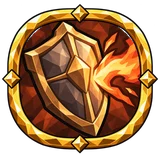 |
Ash Tempering | Strength and Dexterity | −10% duration of ailments on you of base burning |
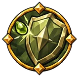 |
Bitter Antidote | Strength and Dexterity | −10% duration of ailments on you of base poison |
| Draught Against Sickness | Intelligence and Strength | −15% duration of ailments on you of base on drinking a mead recently | |
| Flesh of the North | Intelligence and Strength | −10% duration of ailments on you of base | |
| Green Tempering | Strength and Dexterity | −20% duration of ailments on you of base poison on dodge recently | |
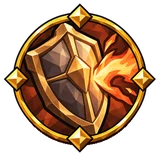 |
Hide by the Fire | Strength and Dexterity | −12.5% duration of ailments on you of base burning while moving |
| Iron Constitution | Dexterity | −10% duration of ailments on you | |
| Lesson of the Blow | Intelligence and Strength | −30% duration of ailments on you of base when staggered recently | |
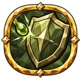 |
Salt of the Swamps | Strength and Dexterity | −10% duration of ailments on you of base poison |
| Stout Blood | Intelligence and Strength | −10% duration of ailments on you of base | |
| Stubborn flesh | Intelligence and Strength | −10% duration of ailments on you of base | |
| Swamp Dweller's Skin | Strength and Dexterity | −10% duration of ailments on you of base poison | |
| Swamp Lessons | Strength and Dexterity | −10% duration of ailments on you of base poison | |
| Troll-Blooded | Intelligence | −10% duration of ailments on you |
Ailments¶
| Name | Branch | Effect | |
|---|---|---|---|
| Creeping Blight | Intelligence | 40% increased ailment build-up | |
| First Sign of Sickness | Dexterity | 40% increased ailment build-up against full life enemies | |
| Frost and Flame | Dexterity and Intelligence | 40% increased ailment build-up 15% increased elemental damage |
|
| Grave Affliction | Dexterity and Intelligence | 10% increased ailment damage | |
| Lingering Rot | Strength and Dexterity | 40% increased ailment build-up | |
| Lingering Sickness | Dexterity and Intelligence | 15% increased ailment duration | |
| Seal of Affliction | Dexterity and Intelligence | 40% increased ailment build-up | |
| Sickness of the Last Hour | Dexterity | 40% increased ailment build-up against low life enemies |
Airborne¶
| Name | Branch | Effect | |
|---|---|---|---|
| Falling Stone's Weight | Dexterity | 120% increased stagger build-up airborne | |
| Fray Above the Ground | Intelligence | 60% increased damage airborne 30% reduced cost airborne |
|
| Open Sky | Dexterity and Intelligence | −30% duration of ailments on you of base airborne | |
| Runes on the Wind | Intelligence | 60% increased eitr regeneration airborne +1 projectiles per shot or throw airborne |
|
| Skyward Press | Dexterity | 30% increased knockback airborne |
Ally Links¶
| Name | Branch | Effect | |
|---|---|---|---|
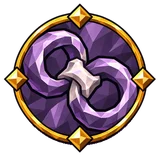 |
Circle of Brotherhood | Intelligence and Strength | +10% link contact area |
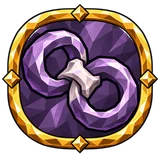 |
Lasting Oath | Intelligence and Strength | +1.25 s link retention |
| Loyalty to the Bond | Intelligence and Strength | +1.25 s link retention | |
| Outstretched Thread | Intelligence and Strength | +10% link range +5% health regeneration shared with linked allies |
|
| Runic Thread | Intelligence | +5% rune shield regeneration shared with linked allies | |
| Shared Wound | Intelligence and Strength | +0.05 of linked ally damage taken by you +10% link range |
|
| Shieldbrother's Blood | Intelligence and Strength | +5% health regeneration shared with linked allies | |
| Shieldbrother's Strength | Intelligence and Strength | +5% stamina regeneration shared with linked allies | |
| Thread of Life | Intelligence and Strength | +5% health regeneration shared with linked allies | |
| Thread of Vigour | Intelligence and Strength | +5% stamina regeneration shared with linked allies | |
| Thread of Wisdom | Intelligence | +5% eitr regeneration shared with linked allies |
Alternative Attacks¶
| Name | Branch | Effect | |
|---|---|---|---|
| Blade's Other End | Strength and Dexterity | 15% increased alternative attack speed on dodge recently 30% increased alternative attack critical strike chance |
|
| Bludgeon's Push | Strength and Dexterity | 5% reduced alternative attack stamina cost 10% increased alternative attack knockback |
|
| Broad Fray | Strength and Dexterity | 7.5% increased alternative attack speed 10% increased alternative attack area of effect 40% increased stagger build-up with alternative attacks |
|
| Drengr's Swing | Strength | 20% increased melee damage with attacks 10% increased melee area of effect with attacks |
|
| Fatal Swing | Intelligence and Strength | +25% alternative attack critical strike damage | |
| Meeting of Blades | Strength | 20% increased melee damage with attacks | |
| Signature Blow | Intelligence and Strength | 15% increased alternative attack damage | |
| Stubborn Press | Strength and Dexterity | 7.5% reduced alternative attack stamina cost on primary attack hit recently 60% increased stagger build-up with alternative attacks on primary attack hit recently |
|
| Sweeping Reply | Strength and Dexterity | 7.5% increased alternative attack speed 10% increased alternative attack area of effect |
|
| Swift Fray | Strength | 5% increased melee attack speed 40% increased ailment build-up in melee |
Area¶
| Name | Branch | Effect | |
|---|---|---|---|
| Caster's Expanse | Intelligence and Strength | 10% increased area of effect | |
| Circle on the Plains | Intelligence and Strength | 10% increased area of effect | |
| Far Circles | Intelligence and Strength | 10% increased area of effect 15% increased area damage |
|
| Lasting Presence | Intelligence and Strength | 15% increased area duration of your own buffs 10% increased area of effect |
|
| Might of the Broad Blow | Intelligence and Strength | 15% increased area damage | |
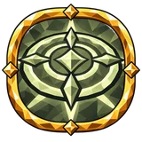 |
Reach of Living Strength | Intelligence and Strength | 15% increased area duration of your own buffs 2.5% increased area of effect per 100 points of maximum health |
| Rusting Sweep | Strength | 40% increased armour break build-up 10% increased attack area of effect |
|
| Wide Circle of Battle | Intelligence and Strength | 10% increased area of effect |
Armour¶
| Name | Branch | Effect | |
|---|---|---|---|
| Anvil's Memory | Strength and Dexterity | 15% increased armour | |
| Drengr's Greaves | Strength and Dexterity | 30% increased armour when hit recently 10% increased armour from equipped leg armour |
|
| Forged Hauberk | Strength | 10% increased armour from equipped body armour | |
| Forged Heart | Strength | 15% increased armour | |
| Iron Circlet | Strength | 15% increased armour 10% increased armour from equipped helmet |
|
| Iron Skin | Strength and Dexterity | 15% increased armour +5 armour |
|
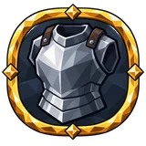 |
Lightened Forging | Strength | +15% equipment ease 60% increased armour from equipped body armour when hit recently +15% equipment ease per 100 points of current armour |
| Old Drengr's Armour | Intelligence and Strength | 15% increased armour | |
| Old Guard's Helm | Intelligence and Strength | 15% increased armour 10% increased armour from equipped helmet |
|
| Retainer's Cuirass | Strength | 15% increased armour 10% increased armour from equipped body armour |
|
| Rune Beneath Steel | Intelligence and Strength | 15% increased armour +20 rune shield |
|
| Tempered Defence | Strength | 5% increased armour effectiveness | |
| Tempered Defence | Intelligence and Strength | 5% increased armour effectiveness | |
| Unbent Oak | Strength and Dexterity | 15% increased armour +10% stagger resistance |
Armour and Evasion¶
| Name | Branch | Effect | |
|---|---|---|---|
| Huskarl's Mail | Strength and Dexterity | 15% increased armour 7.5% increased evasion rating +8 Strength +8 Dexterity |
|
| Supple Forging | Strength and Dexterity | 15% increased armour 7.5% increased evasion rating |
|
| Traveller's Mail | Strength and Dexterity | 10% increased armour from equipped body armour 22.5% increased evasion rating from equipped body armour |
Armour and Rune Shield¶
| Name | Branch | Effect | |
|---|---|---|---|
| Armour and Rune Shield | Intelligence and Strength | 15% increased armour 12.5% increased rune shield |
|
| Forged Inscription | Intelligence and Strength | 10% increased armour from equipped body armour 12.5% increased rune shield from equipped body armour |
|
| Runeforged Aegis | Intelligence and Strength | 15% increased armour 12.5% increased rune shield 12.5% increased maximum eitr +8 Intelligence +8 Strength |
Armour Break¶
| Name | Branch | Effect | |
|---|---|---|---|
| Crack in the King's Carapace | Strength | 40% increased armour break build-up against bosses | |
| Shattered Mail | Strength | 40% increased armour break build-up | |
| Split Carapace | Strength | +25% ailment effect armour break | |
| Strike Into the Breach | Strength and Dexterity | 30% increased damage against enemies with broken armour | |
| Unmended Breach | Strength | 10% increased armour break duration |
Attack Combo¶
| Name | Branch | Effect | |
|---|---|---|---|
| Links of the Fray | Strength and Dexterity | 2.5% increased damage per Combo hit +1 Combo limit |
|
| Unbroken Fray | Strength | 2.5% increased attack damage per Combo hit 0.5% increased attack speed per Combo hit +1 Combo limit |
Attributes¶
| Name | Branch | Effect | |
|---|---|---|---|
| Allfather's Spark | Intelligence | +15 Intelligence | |
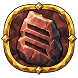 |
Blood of Giants | Strength | +15 Strength 10% increased Strength |
| Deer's Trail | Dexterity and Intelligence | +15 Dexterity | |
| Drengr's Shoulders | Strength | +15 Strength | |
| Fox's Cunning | Dexterity | +15 Dexterity 10% increased Dexterity |
|
| Giant's Heart | Strength | +15 Strength | |
| Jotun Bone | Strength | +15 Strength | |
| Mountain Roots | Strength | +15 Strength | |
| Raven's Thought | Intelligence | 10% increased Intelligence | |
| Stature of Steel | Strength | 10% increased Strength | |
| Steady Hand | Dexterity and Intelligence | 10% increased Dexterity |
Auras¶
| Name | Branch | Effect | |
|---|---|---|---|
| Banner Above the Ranks | Intelligence and Strength | 10% increased aura area of effect | |
| Banner's Circle | Intelligence and Strength | 10% increased aura area of effect | |
| Banner's Trace | Intelligence and Strength | +3 s aura linger duration | |
| Dread Presence | Intelligence and Strength | 15% increased aura damage | |
| Echo of Presence | Intelligence and Strength | +3 s aura linger duration | |
| Living Presence | Intelligence and Strength | +10% aura effect 2.5% increased aura area of effect per 100 points of maximum health |
|
| Strength Beneath the Banner | Intelligence and Strength | +10% aura effect |
Axes¶
| Name | Branch | Effect | |
|---|---|---|---|
| Axe Bite | Strength and Dexterity | 20% increased axe damage 40% increased bleed build-up with axes |
|
| Axe Dance | Strength and Dexterity | 5% increased axe attack speed | |
| Bloodied Edge | Strength and Dexterity | 40% increased ailment build-up with axes | |
| Jarl's Axe | Strength and Dexterity | 30% increased axe critical strike chance +20% axe critical strike damage |
|
| Last Notch | Strength and Dexterity | 40% increased bleed build-up with axes +20% axe critical strike damage |
|
| Raider's Axe | Strength and Dexterity | 20% increased axe damage 10% reduced axe stamina cost |
|
| Raider's Poll | Strength and Dexterity | 30% increased axe critical strike chance 40% increased stagger build-up with axes |
|
| Woodcutter's Hand | Strength and Dexterity | 5% increased axe attack speed 10% reduced axe stamina cost |
Bleeding¶
| Name | Branch | Effect | |
|---|---|---|---|
| Blood Trail Hunt | Strength and Dexterity | 20% increased damage against bleeding enemies | |
| Crimson Thread's Trace | Strength and Dexterity | 40% increased bleed build-up | |
| Fresh Incision | Strength and Dexterity | 120% increased bleed build-up on parry recently | |
| Fugitive's Bloody Trail | Strength and Dexterity | 15% increased bleed duration against moving targets 10% increased bleed damage against moving targets |
|
| Gaze Upon the Wound | Dexterity | 30% increased critical strike chance against bleeding enemies | |
| Last Drops | Strength and Dexterity | 10% increased bleed damage against low life enemies | |
| Mortal Wound | Strength and Dexterity | +5% physical damage over time multiplier | |
| Open wound | Strength and Dexterity | 40% increased bleed build-up against bleeding enemies | |
| Scarlet Stream | Strength and Dexterity | 40% increased bleed build-up 60% increased bleed damage on parry recently |
|
| Unceasing Wound | Strength and Dexterity | +5% physical damage over time multiplier 20% increased bleed damage |
|
| Unhealed Mark | Strength and Dexterity | 10% increased bleed duration |
Blocking¶
| Name | Branch | Effect | |
|---|---|---|---|
| Guard at the Gate | Strength | 22.5% increased block power while standing still 15% increased block power from equipped shield |
|
| Raised Guard | Dexterity | 22.5% increased block power with the shield up | |
| Scar on the Shield | Strength | 10% reduced block stamina cost when hit recently | |
| Shield After the Blow | Strength | 15% increased block power 5% reduced block stamina cost +5 health on block |
|
| Shield Wall | Strength | 15% increased block power +20% stagger resistance |
|
| Shieldbearer's Grip | Intelligence and Strength | 15% increased block power | |
| Weary Shieldbearer | Strength | 30% increased block power at low stamina 10% reduced block stamina cost at low stamina |
Blocking Movement¶
| Name | Branch | Effect | |
|---|---|---|---|
| Shieldbearer's Tread | Strength | 7.5% increased movement speed with the shield up 5% reduced block stamina cost |
|
| Walking Bastion | Strength | 7.5% increased movement speed with the shield up 5% reduced block stamina cost |
Blood Magic¶
| Name | Branch | Effect | |
|---|---|---|---|
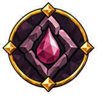 |
Scarlet Rune | Intelligence | 20% increased blood staff damage |
| Word Written in Blood | Intelligence | 5% increased blood staff cast speed |
Blunt Damage¶
| Name | Branch | Effect | |
|---|---|---|---|
| Bone Beneath Iron | Strength | 30% increased blunt damage on block recently 80% increased armour break build-up on block recently |
|
| Broken Carapace | Strength | 40% increased armour break build-up | |
| Counterblow's Weight | Strength and Dexterity | 40% increased blunt damage with attacks on block recently | |
| Crushing Push | Strength and Dexterity | 10% increased blunt knockback | |
| Poll's Song | Strength | 15% increased blunt damage | |
| Ring of Bones | Strength | 15% increased blunt damage 40% increased stagger build-up |
|
| Steel Stride | Strength and Dexterity | 20% increased blunt damage with attacks | |
| Steel to the Bone | Strength and Dexterity | 20% increased blunt damage with attacks | |
| Yielding Armour | Strength and Dexterity | 40% increased armour break build-up with blunt damage |
Bombs¶
| Name | Branch | Effect | |
|---|---|---|---|
| Careful Throw | Dexterity and Intelligence | 5% increased bomb attack speed 12.5% chance to save bomb on bomb throw |
|
| Caustic Wick | Dexterity and Intelligence | 40% increased ailment build-up with bombs +1 bounce |
|
| Demolisher's Hand | Dexterity and Intelligence | 5% increased bomb attack speed 10% reduced bomb stamina cost |
|
| Double Peal | Dexterity and Intelligence | +10% double blast | |
| Fateful Shard | Dexterity and Intelligence | +20% bomb critical strike damage | |
| Frugal Demolisher | Dexterity and Intelligence | 20% increased bomb damage 10% reduced bomb stamina cost |
|
| Fuse Spark | Dexterity and Intelligence | 30% increased bomb critical strike chance 10% increased bomb projectile speed |
|
| Powder Underfoot | Dexterity and Intelligence | 20% increased bomb damage | |
| Raider's Thunder | Dexterity and Intelligence | 12.5% increased blast radius 20% increased bomb damage |
|
| Shrapnel Wound | Dexterity and Intelligence | 40% increased ailment build-up with bombs 5% increased bomb attack speed |
|
| Spare Fuse | Dexterity and Intelligence | 12.5% chance to save bomb on bomb throw | |
| True Fuse | Dexterity and Intelligence | 30% increased bomb critical strike chance +20% bomb critical strike damage |
Bows¶
| Name | Branch | Effect | |
|---|---|---|---|
| Arrow Above the Heather | Dexterity | 10% increased bow projectile speed | |
| Bending Ash | Dexterity | 10% increased bow draw and reload speed 5% reduced bow draw stamina cost |
|
| Bowstring Song | Dexterity | 10% increased bow projectile speed 0.5% increased bow draw and reload speed per 20 points of "Dexterity" |
|
| Distant Flight | Dexterity | 20% increased arrow and bolt range +20% bow additional projectile chance 10% increased shooting effective range |
|
| Falcon's eye | Dexterity | 30% increased bow critical strike chance +20% bow critical strike damage |
|
| Feather in the Wind | Dexterity | 10% increased bow projectile speed | |
| Fletched Fortune | Dexterity | +20% bow additional projectile chance | |
| Gaze Through the Mist | Dexterity | 10% increased bow shot accuracy 30% increased bow critical strike chance |
|
| Hunter's Arrowhead | Dexterity | 40% increased ailment build-up with bows | |
| Last Draw | Dexterity | 20% increased bow draw and reload speed on dodge recently | |
| Patient Hunter | Dexterity | 12% increased shooting effective range | |
| Point Blank | Dexterity | 12% increased shooting effective range | |
| Raven's Eye | Dexterity | 10% increased shot accuracy 35% increased bow damage |
|
| Steady Shot | Dexterity | 12% increased shooting effective range | |
| Stout Bowstring | Dexterity | 35% increased bow damage 10% increased bow draw and reload speed 10% reduced bow stamina cost |
|
| Twin Nocks | Dexterity | 10% increased shot accuracy +20% bow additional projectile chance |
|
| Ullr's Draw | Dexterity | 20% increased damage 10% increased draw and reload speed +15 Dexterity |
|
| Wanderer's Bow | Dexterity | 35% increased bow damage 10% reduced bow stamina cost |
Burning Ground¶
| Name | Branch | Effect | |
|---|---|---|---|
| Ashen Wake | Intelligence | 20% increased fire damage with ground effects 10% increased fire area of effect with ground effects 30% increased eitr regeneration while on Burning Ground Spells create ground when they hit terrain with fire damage |
Carry Capacity¶
| Name | Branch | Effect | |
|---|---|---|---|
| Giant's Belt | Strength | +30 carry weight +10% maximum carry capacity +2.5% knockback resistance of base per 100 points of maximum carry capacity |
|
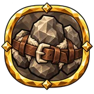 |
Giant's Burden | Strength | +30 carry weight +2.5% knockback resistance of base per 100 points of maximum carry capacity |
| Porter's Shoulders | Strength | +10% maximum carry capacity | |
| Stout Straps | Strength | +30 carry weight | |
| Traveller's Megingjord | Strength | +30 carry weight 2.5% reduced two-handed stamina cost with attacks per 100 points of maximum carry capacity |
Charged Attacks¶
| Name | Branch | Effect | |
|---|---|---|---|
| Circle of the Heavy Blow | Strength and Dexterity | 20% increased charged attack area of effect 80% increased ailment build-up with charged attacks |
|
| Decisive Swing | Strength and Dexterity | 30% increased charged attack damage 60% increased charged attack critical strike chance |
|
| Fist's Release | Strength and Dexterity | 10% reduced charged attack stamina cost Deal 30% of hit damage to nearby enemies with charged attacks |
|
| Giant's Run-Up | Strength | 10% increased movement speed at low life Sprinting far enough charges your next attack. Cooldown: 2 s. |
|
| Held Might | Strength and Dexterity | 60% increased charged attack damage on block recently | |
| Leap Before the Blow | Strength and Dexterity | 10% reduced charged attack stamina cost Charge your next attack on jump Jumping charges the next attack. The charged attack keeps its weapon type and can interact with charged attack effects. Cooldown: 2 s. |
|
| Stored Fury | Strength and Dexterity | 80% increased stagger build-up with charged attacks 30% increased charged attack damage |
|
| Strength Before the Storm | Strength and Dexterity | 120% increased stagger build-up with charged attacks on primary attack hit recently | |
| Weighty Anticipation | Strength and Dexterity | 80% increased stagger build-up with charged attacks |
Chilled Ground¶
| Name | Branch | Effect | |
|---|---|---|---|
| Frozen Memory | Intelligence | 20% increased frost damage with ground effects | |
| Glassbound | Intelligence | 10% increased frost area of effect with ground effects 15% reduced cost while on Chilled Ground Spells create ground when they hit terrain with frost damage |
|
| Winter's Reach | Intelligence | 40% increased chill build-up with ground effects |
Clubs¶
| Name | Branch | Effect | |
|---|---|---|---|
| Bonebreaker’s Grip | Strength | 10% reduced club stamina cost | |
| Drengr's Maul | Strength | 25% increased club damage on block recently 40% increased stagger build-up with clubs |
|
| Enemy's Temple | Strength | 30% increased club critical strike chance +20% club critical strike damage |
|
| Giant's Bruise | Strength | 40% increased stagger build-up with clubs | |
| Oak's Wrath | Strength | 12.5% increased club damage 15% increased club area of effect on stagger with clubs recently 10% increased club knockback |
|
| Oakwood Swing | Strength | 5% increased club attack speed | |
| Skull Beneath the Hammer | Strength | +20% club critical strike damage | |
| Troll's Knuckle | Strength | 12.5% increased club damage 5% increased club attack speed 10% reduced club stamina cost |
|
| True Bludgeon | Strength | 30% increased club critical strike chance |
Cold and Chill¶
| Name | Branch | Effect | |
|---|---|---|---|
| Blizzard's Breath | Intelligence | 40% increased chill build-up against wet targets | |
| Blue Twilight | Dexterity | 37.5% increased frost damage on crit recently | |
| Cold in the Joints | Dexterity | 40% increased chill build-up against moving targets | |
| Frost's Grasp | Dexterity | 10% increased chill duration 20% increased chill effect |
|
| Glacier's Heart | Intelligence | 15% increased frost damage | |
| Glassy Frost | Intelligence | 20% increased frost damage against frozen targets 40% increased chill build-up against frozen targets |
|
| Ice Floe's Fracture | Dexterity | 20% increased damage against frozen targets Gain 15% of physical damage as extra frost |
|
| Lasting Rime | Dexterity | +5% frost damage over time multiplier | |
| Rime on the Wound | Intelligence | 40% increased chill build-up against wet targets | |
| Winter Without End | Dexterity | +5% frost damage over time multiplier | |
| Winter's Point | Dexterity | +12% frost resistance penetration |
Combat¶
| Name | Branch | Effect | |
|---|---|---|---|
| Arms of the North | Strength and Dexterity | 15% increased melee damage 15% increased projectile damage +8 Strength +8 Dexterity |
|
| Battleweaver | Dexterity and Intelligence | +15% critical strike damage 15% increased attack damage 5% increased attack speed 5% increased cast speed +8 Intelligence +8 Dexterity |
|
| Challenge to the Mighty | Intelligence and Strength | 20% increased damage against bosses | |
| Chieftain's End | Intelligence and Strength | 20% increased damage against low life enemies 20% increased damage against rare or unique enemies |
|
| Hunt for the Chieftain | Intelligence and Strength | 20% increased damage against rare or unique enemies | |
| Rhythm of the Fray | Intelligence and Strength | 7.5% increased attack speed on stagger recently 5% increased attack speed |
Comfort and Rest¶
| Name | Branch | Effect | |
|---|---|---|---|
| Breath of the Hearth | Intelligence and Strength | 2.5% increased stamina regeneration per 10 points of comfort | |
| Coals Until Dawn | Dexterity | 35% increased damage while rested | |
| Draught Before Sleep | Intelligence and Strength | 22.5% increased Rested duration on drinking a mead recently 2.5% increased stamina regeneration per point of rested charge |
|
| Evening by the Fireplace | Intelligence and Strength | 15% increased Rested duration 17.5% increased stamina regeneration while rested |
|
| Familiar Walls | Dexterity | +2.5 comfort level 2.5% increased damage per 10 points of comfort |
|
| Healing Repose | Intelligence and Strength | 2.5% increased health regeneration per 10 points of comfort | |
| Hearth's Vigour | Strength and Dexterity | 0.5% increased attack speed per 10 points of comfort | |
| Lasting Rest | Intelligence and Strength | 15% increased Rested duration | |
| Peace Behind the Palisade | Strength and Dexterity | 2.5% increased health regeneration per 10 points of comfort | |
| Purity of Home | Strength and Dexterity | −2.5% duration of ailments on you of base per 10 points of comfort | |
| Quiet Circle of the Hearth | Strength and Dexterity | 2.5% increased stamina regeneration per 10 points of comfort | |
| Rest Beneath the Rafters | Strength and Dexterity | 1.875% increased evasion rating per 10 points of comfort | |
| Rune by the Bed | Intelligence | +35 rune shield while rested | |
| Runekeeper's Sleep | Intelligence and Strength | 15% increased Rested duration 2.5% increased eitr regeneration per point of rested charge |
|
| Runes After Sleep | Intelligence and Strength | 15% increased Rested duration 2.5% increased rune shield recharge per point of rested charge 2.5% increased rune shield recharge per 10 points of comfort |
|
| Soft Pelt | Strength and Dexterity | +2.5 comfort level 1.875% increased evasion rating per 10 points of comfort |
|
| Strength Beyond the Door | Strength and Dexterity | 0.5% increased attack speed per 10 points of comfort | |
| Strength by the Hearth | Intelligence and Strength | 2.5% increased damage per point of rested charge | |
| Strength of Hearth Warmth | Intelligence and Strength | 12.5% increased Rested effect 2.5% increased armour per 10 points of rested charge |
|
| Warmth of Home | Strength and Dexterity | 1.875% increased evasion rating per 10 points of comfort |
Companions¶
| Name | Branch | Effect | |
|---|---|---|---|
| Comrade's Cuirass | Intelligence and Strength | 3.75% reduced damage taken for your companion +10 armour for your companion per 100 points of current armour |
|
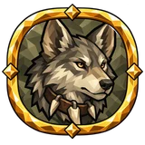 |
Comrade's Life | Intelligence and Strength | 7.5% increased maximum health for your companion +25% of modifiers shared of base for your companion maximum health bonuses |
| Faithful Companion | Intelligence and Strength | 20% increased damage for your companion | |
| One Road | Intelligence and Strength | 20% increased damage for your companion 2.5% increased health regeneration for your companion per 10 points of comfort |
|
| Shared Fray | Intelligence and Strength | 20% increased damage for your companion +25% of modifiers shared of base for your companion damage bonuses |
|
| Shoulder-to-Shoulder Victory | Intelligence and Strength | 80% increased damage for your companion on kill recently | |
| Well-Fed Comrade | Intelligence and Strength | 30% increased damage for your companion while fed |
Critical strikes¶
| Name | Branch | Effect | |
|---|---|---|---|
| Executioner's Wager | Dexterity | 15% reduced critical strike chance 25% increased critical strike damage |
|
| Fatal Edge | Strength | +15% critical strike damage | |
| Fatal Inscription | Intelligence | +20% spell critical strike damage | |
| Fate's Aim | Dexterity | 30% increased critical strike chance +15% critical strike damage |
|
| First Scar | Dexterity and Intelligence | 30% increased critical strike chance against full life enemies +25% critical strike damage against full life enemies |
|
| Horizon's Point | Dexterity and Intelligence | 30% increased projectile critical strike chance against distant enemies +15% projectile critical strike damage against distant enemies |
|
| Hunter's Instinct | Dexterity | 30% increased critical strike chance +15% critical strike damage |
|
| Hunter's Wager | Dexterity | 150% increased critical strike chance Critical strikes get no critical damage bonus: the multiplier stays 150% |
|
| Keen Instinct | Intelligence and Strength | +15% critical strike damage 30% increased critical strike chance |
|
| Lot of Battle | Strength and Dexterity | 30% increased critical strike chance +15% critical strike damage |
|
| Odin's Eye | Dexterity and Intelligence | 30% increased critical strike chance | |
| On Victory's Edge | Intelligence | 120% increased critical strike chance on kill recently +15% critical strike damage |
|
| Rune's Opening | Intelligence | 30% increased spell critical strike chance | |
| Swan Song | Dexterity and Intelligence | 30% increased critical strike chance against low life enemies +25% critical strike damage against low life enemies |
|
| True Notch | Strength | 30% increased critical strike chance +15% critical strike damage |
|
| Warrior's Eye | Dexterity and Intelligence | 30% increased critical strike chance | |
| Weakest Link | Intelligence and Strength | 30% increased critical strike chance +15% critical strike damage |
|
| Weight of the Verdict | Dexterity and Intelligence | +15% critical strike damage | |
| Wolf's Gaze | Intelligence | 30% increased critical strike chance +15% critical strike damage |
Crossbows¶
| Name | Branch | Effect | |
|---|---|---|---|
| Besieger's Stores | Strength and Dexterity | 10% reduced crossbow stamina cost 25% increased crossbow damage per type of bolt fired in the last 10 seconds 5% increased crossbow damage per point of bolt fired recently |
|
| Bolt Through the Gap | Strength and Dexterity | 30% increased crossbow critical strike chance 10% increased bolt projectile speed 40% increased crossbow critical strike chance with the first shot of a magazine |
|
| Crossbow's Press | Strength and Dexterity | 10% increased crossbow reload speed 10% increased bolt knockback |
|
| Drengr's Bolt | Strength and Dexterity | 20% increased crossbow damage 10% increased bolt projectile speed +15 Dexterity |
|
| Hailstring | Strength and Dexterity | +5% crossbow fire rate | |
| Helm on a Skewer | Strength and Dexterity | +20% crossbow critical strike damage 10% increased bolt knockback 40% increased crossbow critical strike damage with the last loaded shot |
|
| Iron Cadence | Strength and Dexterity | +5% crossbow fire rate | |
| Latch Click | Strength and Dexterity | 40% increased ailment build-up with crossbows 30% chance to reload instantly with crossbows |
|
| Loader's Hand | Strength and Dexterity | 20% increased crossbow reload speed on dodge recently 10% reduced crossbow stamina cost 15% increased crossbow fire rate on dodge recently |
|
| Marksman's Verdict | Strength and Dexterity | 30% increased crossbow critical strike chance +20% crossbow critical strike damage |
|
| Recoil Step | Strength and Dexterity | 25% increased bolt knockback on crit recently +15 Dexterity Crossbow recoil pushes you back a short step, away from where you aim. |
|
| Siege Crossbow | Strength and Dexterity | 10% increased crossbow reload speed 20% increased crossbow damage |
|
| Splintered Shield | Strength and Dexterity | 10% increased bolt knockback +1 loaded bolts |
|
| Swift Windlass | Strength and Dexterity | 10% increased crossbow reload speed +15 Dexterity |
Damage¶
| Name | Branch | Effect | |
|---|---|---|---|
| Night Beast's Feast | Dexterity and Intelligence | 40% increased damage at night |
Damage over Time¶
| Name | Branch | Effect | |
|---|---|---|---|
| Slow Ruin | Intelligence | +5% damage over time multiplier | |
| Unrelenting Decay | Strength | +5% damage over time multiplier |
Damage Resistances¶
| Name | Branch | Effect | |
|---|---|---|---|
| Bitterness of the Swamps | Dexterity and Intelligence | +7.5% poison resistance | |
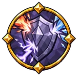 |
Circle of Elements | Intelligence | +7.5% elemental resistance |
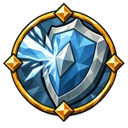 |
Cloak of Mountain Cold | Intelligence and Strength | +7.5% cold resistance |
| Hardened Soul | Dexterity | +7.5% elemental resistance | |
| Rain Tempering | Intelligence | +15% wet resistance +7.5% elemental resistance |
|
| Sign of the Hardy Body | Intelligence and Strength | +7.5% elemental resistance | |
| Skin Amid Sparks | Intelligence and Strength | +20% blast resistance | |
| Tempering of Four Winds | Intelligence | +7.5% elemental resistance | |
| Traveller's Hide | Dexterity | +7.5% elemental resistance | |
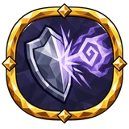 |
Ward Against the Dead | Intelligence and Strength | +7.5% spirit resistance |
| Ward of the Passes | Intelligence | +7.5% elemental resistance |
Dodge Rolls¶
| Name | Branch | Effect | |
|---|---|---|---|
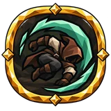 |
Tracker's Roll | Dexterity | 12.5% increased dodge speed 5% reduced dodge stamina cost |
| Wind Dancer | Dexterity | 7.5% increased evasion rating 12.5% increased dodge speed 5% reduced dodge stamina cost |
Dual Wielding¶
| Name | Branch | Effect | |
|---|---|---|---|
| Crossing Blades | Dexterity and Intelligence | 5% increased dual-wielding attack speed 30% increased dual-wielding critical strike chance |
|
| Twin Sentence | Dexterity and Intelligence | +20% dual-wielding critical strike damage | |
| Twin Wolf Fangs | Dexterity and Intelligence | 15% increased dual-wielding damage 7.5% reduced dual-wielding stamina cost |
|
| Two Hands of the Storm | Dexterity | 15% increased dual-wielding damage 5% increased dual-wielding attack speed |
Effect Duration¶
| Name | Branch | Effect | |
|---|---|---|---|
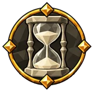 |
Fleetingness | Intelligence | ×0.85 effect duration |
| Lasting Blessing | Dexterity and Intelligence | 15% increased duration of your own buffs | |
| Lasting Resolve | Intelligence and Strength | 20% increased effect duration +10% stagger resistance |
|
| Lingering Resonance | Dexterity and Intelligence | 20% increased ailment and buff duration | |
| Unfading Echo | Intelligence | 20% increased effect duration |
Effortless Evasion¶
| Name | Branch | Effect | |
|---|---|---|---|
| Feather Step | Dexterity | 10% chance to evade without spending stamina |
Eitr¶
| Name | Branch | Effect | |
|---|---|---|---|
| At Magic's End | Intelligence and Strength | 10% increased attack speed at low eitr | |
| Clear Thought | Intelligence | 22.5% increased armour at full eitr | |
| Deep Eitr | Intelligence | 10% reduced eitr cost 12.5% increased maximum eitr |
|
| Eitr | Dexterity and Intelligence | +12.5 maximum eitr | |
| Eitr | Intelligence and Strength | 15% increased area of effect if started at full eitr | |
| Fullness of Knowledge | Intelligence and Strength | 15% increased area of effect if started at full eitr | |
| Hidden Wellspring | Intelligence and Strength | 20% increased eitr regeneration | |
| Last Spark | Intelligence | 80% increased ailment build-up at low eitr | |
| Raven's Vessel | Dexterity and Intelligence | +12.5 maximum eitr +1.25 maximum eitr per point of rune shield from your equipped helmet |
|
| Sip of Wisdom | Intelligence | +12.5 eitr on block +18.75 eitr on ignite |
|
| Wellspring of Mimir | Intelligence | 20% increased eitr regeneration | |
| Whisper of Stars | Intelligence | 40% increased eitr regeneration at night 20% increased eitr regeneration from equipped armour |
Eitr and Rune Shield¶
| Name | Branch | Effect | |
|---|---|---|---|
| Eitr Bulwark | Intelligence | 12.5% increased maximum eitr 12.5% increased rune shield |
|
| Flow of Runes | Intelligence and Strength | 20% increased eitr regeneration | |
| Keeper's Vessel | Intelligence and Strength | +12.5 maximum eitr 12.5% increased rune shield |
|
| Runewoven Cloak | Dexterity and Intelligence | 20% increased eitr regeneration 7.5% increased evasion rating 12.5% increased rune shield +8 Dexterity +8 Intelligence |
Elemental Ailments¶
| Name | Branch | Effect | |
|---|---|---|---|
| Confluence | Intelligence | 25% increased damage per elemental ailment on the target | |
| Converging Afflictions | Intelligence | 20% increased damage against enemies with an elemental ailment 40% increased burning build-up chill shock |
|
| Lingering Afflictions | Intelligence | 40% increased burning build-up chill shock 15% increased burning duration chill shock |
Elemental Damage¶
| Name | Branch | Effect | |
|---|---|---|---|
| Muspell's Wrath | Intelligence | 30% increased elemental damage |
Endurance¶
| Name | Branch | Effect | |
|---|---|---|---|
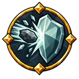 |
Brawler’s Stance | Dexterity | +5% endurance |
| Cliff's Stubbornness | Strength | +12.5 endurance threshold | |
| Last Stronghold | Strength | +12.5 endurance threshold | |
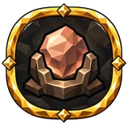 |
Reserve of Resolve | Strength | +1 endurance threshold per 10 points of maximum health |
| Shieldbearer's Oath | Strength | +12.5 endurance threshold +7.5% endurance with the shield up |
|
| Stone in the Chest | Strength | +5% endurance | |
| Weight of Survival | Intelligence and Strength | +5% endurance |
Equipment and Accessories¶
| Name | Branch | Effect | |
|---|---|---|---|
| Keeper's Ward | Intelligence and Strength | 15% increased defensive accessory affix effect 15% increased resource and recovery accessory affix effect |
|
| Talisman's Point | Dexterity and Intelligence | 15% increased offensive accessory affix effect | |
| Wanderer's Burden | Intelligence and Strength | +15% equipment ease |
Evasion¶
| Name | Branch | Effect | |
|---|---|---|---|
| Effortless Evasion | Dexterity | 10% reduced cost when evading | |
| Elusive Footwork | Dexterity | 7.5% increased evasion rating | |
| Elusive Shade | Strength and Dexterity | 7.5% increased evasion rating | |
| Elusive Sign | Dexterity | 7.5% increased evasion rating 20% increased stamina regeneration on evade recently |
|
| Fox's Stride | Dexterity | 7.5% increased evasion rating 5% increased movement speed +15 Dexterity |
|
| Graceful Retreat | Dexterity | +10% glancing blow chance on evade recently | |
| Hunter's Cloak | Strength and Dexterity | 7.5% increased evasion rating 45% increased evasion rating from equipped body armour on dodge recently |
|
| Step Through Grass | Strength and Dexterity | 9.375% increased evasion rating while moving 22.5% increased evasion rating from equipped leg armour |
|
| Tracker's Leather | Dexterity | 7.5% increased evasion rating 22.5% increased evasion rating from equipped body armour |
|
| Wanderer's Hood | Strength and Dexterity | 7.5% increased evasion rating 30% increased evasion rating from equipped helmet |
Evasion and Rune Shield¶
| Name | Branch | Effect | |
|---|---|---|---|
| Evasion and rune shield | Dexterity and Intelligence | 7.5% increased evasion rating 12.5% increased rune shield |
|
| Ghostly Vestment | Dexterity and Intelligence | 22.5% increased evasion rating from equipped body armour 12.5% increased rune shield from equipped body armour |
|
| Lucid Veil | Dexterity and Intelligence | −18.75% rune shield recharge delay at full eitr | |
| Mistveil | Dexterity and Intelligence | 7.5% increased evasion rating 12.5% increased rune shield |
|
| Shadow Behind the Rune | Dexterity and Intelligence | 7.5% increased evasion rating 12.5% increased rune shield −12.5% rune shield recharge delay |
Experience and Skill Retention¶
| Name | Branch | Effect | |
|---|---|---|---|
| Hugin's Memory | Dexterity and Intelligence | −10% experience lost on death | |
| Munin's Word | Dexterity and Intelligence | 10% increased experience gained |
Fire and Burning¶
| Name | Branch | Effect | |
|---|---|---|---|
| Ashlands Flame | Strength | 15% increased fire damage | |
| Breath of Embers | Strength | 22.5% increased fire damage on trinket activation recently Gain 15% of physical damage as extra fire |
|
| Campfire Spark | Intelligence | 15% increased fire damage 40% increased burning build-up |
|
| Embers That Endure | Strength | +5% fire damage over time multiplier | |
| Enduring Flame | Intelligence and Strength | +5% fire damage over time multiplier | |
| Fiery Trail | Intelligence | 15% increased fire damage 40% increased burning build-up |
|
| Fire in the Veins | Strength | 20% increased burning damage | |
| Fire's Bite | Strength | 40% increased burning build-up | |
| Forge Flare | Intelligence | 37.5% increased fire damage on crit recently | |
| Hand at the Brazier | Strength | 15% increased fire damage | |
| Hungry Flame | Intelligence | 15% increased fire damage | |
| Last Firebrand | Strength | 10% increased burning damage against low life enemies | |
| On Burning Coals | Strength | 20% increased damage against burning targets | |
| Scarlet Glow | Intelligence | 50% increased burning damage on crit recently | |
| Smouldering trail | Strength | 10% increased burning duration | |
| Spark Beneath the Skin | Strength | 40% increased burning build-up | |
| Surtr's Heat | Intelligence | +12% fire resistance penetration | |
| Tenacious Embers | Strength and Dexterity | +5% fire damage over time multiplier |
Fists¶
| Name | Branch | Effect | |
|---|---|---|---|
| Bare Bones | Dexterity | 30% increased fist critical strike chance +20% fist critical strike damage |
|
| Brawler's Breath | Dexterity | 10% reduced fist stamina cost | |
| Fenring's Claw | Dexterity | 30% increased fist critical strike chance +20% fist critical strike damage |
|
| Fist's Seal | Dexterity | 40% increased stagger build-up with fists | |
| Hands Without Steel | Dexterity | 5% increased fist attack speed 10% reduced fist stamina cost |
|
| Hunter's Knuckles | Dexterity | 30% increased fist critical strike chance | |
| Knuckle Dance | Dexterity | 5% increased fist attack speed 40% increased stagger build-up with fists |
|
| Stout Fist | Dexterity | 30% increased fist critical strike chance 20% increased unarmed damage |
|
| Troll's Fist | Dexterity | 20% increased fist damage 40% increased stagger build-up with fists +15 Strength |
|
| Wolf's Grasp | Dexterity | 30% increased fist critical strike chance 30% increased fist sneak attack damage |
Food¶
| Name | Branch | Effect | |
|---|---|---|---|
| Bread for the Road | Strength and Dexterity | 12.5% increased stamina regeneration while fed 0.5% increased attack speed per 30 points of stamina from food |
|
| Feast Beneath Runes | Dexterity and Intelligence | 20% increased food nourishment eitr +1.25 rune shield per 50 points of eitr from food 2.5% increased poison damage per 15 points of eitr from food |
|
| Food for a Long Life | Strength and Dexterity | 20% increased food nourishment health 15% increased food duration 18.75% increased health regeneration while fed |
|
| Hearty Feast | Strength and Dexterity | 20% increased food nourishment health +9.375% elemental resistance while fed 2.5% increased physical damage per 15 points of health from food |
|
| Hearty Reserves | Strength and Dexterity | 20% increased food nourishment stamina | |
| Roadside Feast | Strength and Dexterity | 20% increased food nourishment stamina 15% increased food duration 12.5% increased stamina regeneration while fed |
|
| Rune at the Feast | Intelligence and Strength | 15.625% increased rune shield while fed | |
| Runecarver's Feast | Intelligence | 20% increased food nourishment eitr 25% increased eitr regeneration while fed |
|
| Stores for the Swamp March | Strength and Dexterity | 15% increased food duration +9.375% poison resistance while fed |
|
| Well-Fed Resolve | Strength and Dexterity | 20% increased food nourishment health |
Fortification¶
| Name | Branch | Effect | |
|---|---|---|---|
| Shieldbearer's Roots | Strength | +5 maximum fortification +10% fortification effect |
|
| Stone Stance | Strength | +5 maximum fortification +10% fortification effect |
Glancing Blow¶
| Name | Branch | Effect | |
|---|---|---|---|
| A Turn of the Edge | Dexterity | +5% glancing blow chance +5% glancing blow damage reduction |
Glancing Blows¶
| Name | Branch | Effect | |
|---|---|---|---|
| Blade's Touch | Strength and Dexterity | +5% glancing blow chance | |
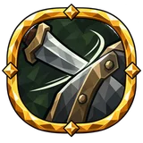 |
Glancing Steel | Strength and Dexterity | +5% glancing blow chance |
| Passing Blow | Strength and Dexterity | +5% glancing blow chance | |
| Scar's Lesson | Strength and Dexterity | +10% glancing blow damage reduction when hit recently | |
| Shield's Turn | Strength and Dexterity | +5% glancing blow chance | |
| Spark on the Rim | Strength and Dexterity | +15% glancing blow damage reduction on parry recently | |
| Step Past the Edge | Strength and Dexterity | +10% glancing blow chance on dodge recently | |
| Yielding Guard | Strength and Dexterity | +5% glancing blow damage reduction |
Ground Effects¶
| Name | Branch | Effect | |
|---|---|---|---|
| Rune Circle | Intelligence | 10% increased ground area of effect 20% increased ground effect duration +2 ground limit |
|
| Unsettled Ground | Intelligence | 40% increased ground build-up 25% increased ground ailment effect |
Healing¶
| Name | Branch | Effect | |
|---|---|---|---|
| Circle of Mercy | Intelligence and Strength | 10% increased healing area of effect | |
| Eir's Palm | Intelligence and Strength | +15% healing effect | |
| Healer's Gift | Intelligence and Strength | +15% healing effect | |
| Healing Draught | Intelligence and Strength | +22.5% healing effect on drinking a mead recently | |
| Warmth in the Veins | Intelligence and Strength | +15% healing effect |
Health¶
| Name | Branch | Effect | |
|---|---|---|---|
| Blood Beneath Mail | Strength | 7.5% increased maximum health | |
| Blood of the Long Road | Strength | 7.5% increased maximum health | |
| Deer's Stature | Strength and Dexterity | 7.5% increased maximum health | |
| Hardy Root | Strength | 15% increased health regeneration | |
| Hearth and Hound | Strength and Dexterity | 15% increased health regeneration 22.5% increased health regeneration while fed |
|
| Last Bulwark | Intelligence and Strength | 30% increased block power at low life | |
| Life in the Fist | Dexterity | Restore 0.025% of missing health with charged attacks on hit | |
| Life on the Edge | Intelligence | 2.5% increased damage per 10 points of % of missing health | |
| Living Pulse | Intelligence and Strength | +15% health regeneration tick frequency | |
| Sip of Life | Intelligence and Strength | +10 health on kill +0.5% life leech against low life enemies |
|
| Traveller's Heart | Dexterity | 7.5% increased maximum health | |
| Vein Beneath Iron | Intelligence and Strength | 15% increased health regeneration | |
| Vigorous Heart | Intelligence and Strength | 15% increased health regeneration 20% increased damage |
|
| Viking Blood | Strength | +20 maximum health | |
| Warm Vein | Strength | +0.75 health regeneration |
Health and Armour¶
| Name | Branch | Effect | |
|---|---|---|---|
| Flesh and Steel | Intelligence and Strength | +1.25 maximum health per 100 points of current armour | |
| Ironblood | Strength | 15% increased health regeneration +5 armour +15 Strength |
|
| Life Beneath the Helm | Strength and Dexterity | 7.5% increased maximum health +1.25 maximum health per point of armour from your equipped helmet |
|
| Tempered by Scars | Intelligence and Strength | 30% increased armour when hit recently |
Health and Rune Shield¶
| Name | Branch | Effect | |
|---|---|---|---|
| Blood Within the Circle | Intelligence and Strength | 7.5% increased maximum health 12.5% increased rune shield |
|
| Rune of Living Blood | Dexterity and Intelligence | −12.5% rune shield recharge delay |
Health and Stamina¶
| Name | Branch | Effect | |
|---|---|---|---|
| Wolf's Breath | Strength | 10% increased stamina regeneration |
Ice Crystals¶
| Name | Branch | Effect | |
|---|---|---|---|
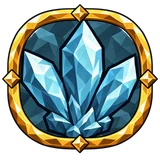 |
Icy Legacy | Intelligence | +2 ice crystal limit An enemy killed by your frost damage leaves an ice crystal where it fell. |
| Shards of Winter | Dexterity | +2 ice crystal limit Freezing an enemy grows an ice crystal next to it. |
Immobilize¶
| Name | Branch | Effect | |
|---|---|---|---|
| Binding Reach | Intelligence and Strength | 10% increased area of effect 40% increased immobilize build-up |
|
| Bramble Snare | Dexterity and Intelligence | +10% chance to immobilize on hit 15% increased immobilize duration |
|
| Crushing Hold | Dexterity and Intelligence | 40% increased stagger build-up against immobilized enemies 20% increased damage against immobilized enemies |
|
| Held Fast | Dexterity and Intelligence | +10% chance to immobilize on hit 20% increased damage against immobilized enemies |
|
| Hobble | Dexterity and Intelligence | +10% chance to immobilize on hit 40% increased stagger build-up against immobilized enemies |
|
| Nowhere to Run | Dexterity and Intelligence | 30% increased critical strike chance against immobilized enemies 15% increased critical strike damage against immobilized enemies |
|
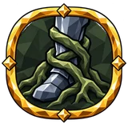 |
Root and Ruin | Dexterity and Intelligence | +10% chance to immobilize on hit |
| Rootwarden | Dexterity and Intelligence | +10% chance to immobilize on hit | |
| Snare Shot | Dexterity and Intelligence | +10% chance to immobilize on hit 30% increased critical strike chance against immobilized enemies |
|
| Stake Through the Heart | Dexterity and Intelligence | 20% increased damage against immobilized enemies 15% increased critical strike damage against immobilized enemies |
Impale¶
| Name | Branch | Effect | |
|---|---|---|---|
| Deep puncture | Dexterity | 40% increased impale build-up 20% increased impale damage |
|
| Lodged Point | Dexterity | 10% increased impale duration | |
| Thorn Under the Skin | Strength | 40% increased impale build-up with thorns |
Infusion¶
| Name | Branch | Effect | |
|---|---|---|---|
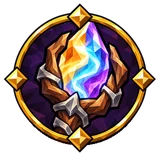 |
Drawing the Earth | Intelligence and Strength | +10% absorption rate for infusion 15% increased potency for infusion |
| Gathered Essence | Intelligence | 15% increased potency for infusion | |
| Held in the Hands | Intelligence | 20% increased effect duration for infusion 15% increased potency for infusion |
Jumping¶
| Name | Branch | Effect | |
|---|---|---|---|
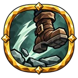 |
Deer's Leap | Dexterity | 10% increased jump height 5% increased jump range |
| Last Leap | Dexterity | 20% increased jump height at low stamina | |
| Soft landing | Dexterity | 7.5% reduced fall damage |
Knives¶
| Name | Branch | Effect | |
|---|---|---|---|
| Fang in the Dark | Dexterity and Intelligence | +20% knife critical strike damage 30% increased knife sneak attack damage |
|
| Knife Beneath the Rib | Dexterity and Intelligence | 30% increased knife critical strike chance +20% knife critical strike damage |
|
| Knife's Trace | Dexterity and Intelligence | 40% increased ailment build-up with knives | |
| Light blade | Dexterity and Intelligence | 5% increased knife attack speed | |
| Serpent's Cut | Dexterity and Intelligence | 5% increased knife attack speed 40% increased poison build-up with knives |
|
| Short Edge | Dexterity and Intelligence | 20% increased knife damage 10% reduced knife stamina cost |
|
| Traveller's Blade | Dexterity and Intelligence | 20% increased knife damage 10% reduced knife stamina cost |
|
| Trickster's Grin | Dexterity and Intelligence | 30% increased knife critical strike chance |
Knockback¶
| Name | Branch | Effect | |
|---|---|---|---|
| Clear the Way | Strength | 10% increased knockback | |
| Giant's Press | Strength | 15% increased knockback on primary attack hit recently | |
| Spreading Earth | Strength | 10% increased slam knockback |
Knockback Resistance¶
| Name | Branch | Effect | |
|---|---|---|---|
| Heels in the Earth | Strength | +20% knockback resistance of base on block recently | |
| Rooted Stone | Strength | +10% knockback resistance of base | |
| Weight of the Old Mountain | Strength | +2.5% knockback resistance of base per 100 points of maximum carry capacity |
Leech¶
| Name | Branch | Effect | |
|---|---|---|---|
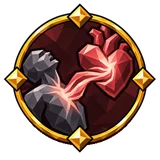 |
Battle Hunger | Strength and Dexterity | +0.5% life leech |
| Blood Mead | Dexterity and Intelligence | +0.5% life leech +0.5% spell life leech |
|
| Blood for Blood | Strength and Dexterity | +1.5% life leech on parry recently +2.25 health regeneration on parry recently |
|
| Draught of Another's Life | Strength and Dexterity | +0.5% life leech +0.75 health regeneration +10 health on kill |
|
| Hungry Incantation | Intelligence | +1% spell life leech at low eitr +0.5% spell life leech |
|
| Rune of Hunger | Intelligence | +0.5% spell life leech 20% increased eitr regeneration +25 eitr on kill |
|
| Stolen Spark | Intelligence and Strength | +0.5% eitr leech | |
| Thirst to Survive | Intelligence and Strength | +1% life leech at low life |
Lightning and Shock¶
| Name | Branch | Effect | |
|---|---|---|---|
| Bolt Above the Swamp | Intelligence | 20% increased lightning damage against wet targets | |
| Charged Vulnerability | Intelligence | +25% ailment effect shock | |
| Lightning Loop | Intelligence | 40% increased shock build-up against wet targets 15% increased shock duration against wet targets |
|
| Lingering Current | Intelligence and Strength | +5% lightning damage over time multiplier | |
| Lingering Storm Echo | Intelligence | 10% increased shock duration | |
| Lingering Voltage | Intelligence | +5% lightning damage over time multiplier | |
| Sky's Sting | Intelligence | 40% increased shock build-up +25% ailment effect shock |
|
| Storm Above Water | Intelligence | 40% increased shock build-up against wet targets | |
| Storm Spear | Intelligence | +12% lightning resistance penetration | |
| Storm's Tremor | Intelligence | 40% increased shock build-up against wet targets | |
| Sustained Discharge | Intelligence | 10% increased shock duration | |
| Thunder in the Reeds | Intelligence | 40% increased shock build-up against wet targets | |
| Thunder's Trail | Intelligence | 15% increased lightning damage 40% increased shock build-up |
|
| Thunderer's Hand | Intelligence | 15% increased lightning damage | |
| White Flash | Intelligence | 37.5% increased lightning damage on crit recently |
Magical Weapons¶
| Name | Branch | Effect | |
|---|---|---|---|
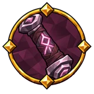 |
Shining Point | Intelligence | 30% increased magical critical strike chance |
Meads¶
| Name | Branch | Effect | |
|---|---|---|---|
| Art of the Draught | Intelligence and Strength | 15% increased consumed mead effect | |
| Bitterness in the Mead Horn | Intelligence and Strength | 20% increased consumed mead duration +9.375% poison resistance while a mead effect is active |
|
| Brew of Four Winds | Intelligence and Strength | 15% increased consumed mead effect +9.375% elemental resistance while a mead effect is active |
|
| Draught of Elements | Intelligence | 18.75% increased elemental damage while a mead effect is active | |
| Healing Mead | Intelligence and Strength | 15% increased consumed mead effect 18.75% increased health regeneration while a mead effect is active |
|
| Horn Before the Road | Intelligence and Strength | 15% increased consumed mead effect 20% increased consumed mead duration 12.5% increased stamina regeneration while a mead effect is active |
|
| Lingering Taste of Mead | Intelligence and Strength | 20% increased consumed mead duration | |
| Potent Mead Horn | Intelligence and Strength | 15% increased consumed mead effect 20% increased consumed mead duration |
|
| Runekeeper's Brew | Intelligence and Strength | 15% increased consumed mead effect 25% increased eitr regeneration while a mead effect is active |
|
| Runic Brew | Intelligence | 15.625% increased rune shield while a mead effect is active |
Measured Evasion¶
| Name | Branch | Effect | |
|---|---|---|---|
| Measured Footwork | Dexterity | 10% reduced cost when evading |
Melee¶
| Name | Branch | Effect | |
|---|---|---|---|
| Amid the Fray | Strength | 30% increased melee critical strike chance 3% increased melee damage per 30 points of "Strength" |
|
| Fighter’s Grip | Strength | 10% reduced melee stamina cost with attacks | |
| Giant-Toppler | Strength | 15% increased melee damage 30% increased melee damage against staggered targets |
|
| Hammerfall | Strength | 40% increased stagger build-up 15% increased melee damage +15 Strength |
|
| Shoulder-to-Shoulder Strike | Dexterity and Intelligence | 20% increased melee damage with attacks 40% increased stagger build-up in melee |
Minions¶
| Name | Branch | Effect | |
|---|---|---|---|
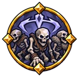 |
Bone Frame | Intelligence | 7.5% increased maximum health for minions |
| Bones Under Oath | Intelligence | 7.5% increased maximum health for minions 3.75% reduced damage taken for minions +25% of modifiers shared of base for minions maximum health bonuses |
|
| Call of the Host | Intelligence | +12% eitr reservation efficiency for minions | |
| Guard by the Keeper | Intelligence | 30% increased damage for minions near its keeper | |
| Keen-Eyed Servant | Intelligence | 30% increased critical strike chance for minions | |
| Light Burden | Intelligence | +12% eitr reservation efficiency for minions | |
| Pact of the Host | Intelligence and Strength | 20% increased damage for minions 7.5% increased maximum health for minions |
|
| Ruthless Servant | Intelligence | +15% critical strike damage for minions | |
| Servants' Ward | Intelligence | +7.5% damage resistance for minions | |
| Steadfast Oath | Intelligence | +12% eitr reservation efficiency for minions | |
| Summoner's Veil | Intelligence | 3.75% reduced damage taken for minions | |
| Summoner's Will | Intelligence | 20% increased damage for minions +25% of modifiers shared of base for minions damage bonuses |
|
| Tempering of the Summoned | Intelligence | −10% duration of ailments on you of base for minions | |
| Zeal of the Host | Intelligence | 20% increased damage for minions 5% increased attack speed for minions |
Movement¶
| Name | Branch | Effect | |
|---|---|---|---|
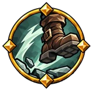 |
Moment for Pursuit | Dexterity | 12.5% increased movement speed on crit recently |
| Path from the Hearth | Dexterity | 5% increased movement speed 1.5% increased movement speed per 5 points of comfort |
|
| Road Through Heather | Strength and Dexterity | 5% increased movement speed | |
| Step After the Fall | Dexterity | 5% increased movement speed on landing recently | |
| Step Beneath the Rune | Dexterity and Intelligence | 7.5% increased movement speed at full rune shield | |
| Step Beyond the Blow | Dexterity | 10% increased movement speed on evade recently | |
| Wanderer's Path | Dexterity | 5% increased movement speed |
Night¶
| Name | Branch | Effect | |
|---|---|---|---|
| Back in the Gloom | Dexterity and Intelligence | 30% increased sneak attack damage | |
| Black Forest's Veil | Dexterity and Intelligence | 40% increased stealth at night | |
| Midnight Knife | Dexterity and Intelligence | +30% critical strike damage at night | |
| Rest Beneath the Moon | Dexterity and Intelligence | 30% increased health regeneration at night | |
| Shadow Behind the Shoulder | Intelligence | 60% increased sneak attack damage at night | |
| Steps Between Shadows | Dexterity | 15% increased evasion rating at night | |
| Twilight's Breath | Dexterity | 20% increased stamina regeneration at night | |
| Watch by Moonlight | Dexterity and Intelligence | 30% increased armour at night |
One-Handed Weapons¶
| Name | Branch | Effect | |
|---|---|---|---|
| Free Fist | Strength and Dexterity | 5% increased one-handed attack speed 10% increased one-handed knockback |
|
| Jarl's Right Hand | Strength and Dexterity | 15% increased one-handed damage 30% increased one-handed critical strike chance |
|
| Light hilt | Strength and Dexterity | 10% reduced one-handed stamina cost with attacks | |
| One Hand's Steel | Strength and Dexterity | 30% increased one-handed damage on dodge recently +20% one-handed critical strike damage |
Onslaught¶
| Name | Branch | Effect | |
|---|---|---|---|
| Kindled Fray | Dexterity | +10% onslaught chance on kill 15% increased Onslaught power |
|
| Retainer's Onslaught | Strength | +10% onslaught chance on kill 15% increased Onslaught power |
|
| Victor's Pursuit | Strength | +10% onslaught chance on kill 15% increased Onslaught power |
Parrying¶
| Name | Branch | Effect | |
|---|---|---|---|
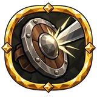 |
Brief Reply | Strength and Dexterity | +20% stagger recovery on dodge recently |
| Duelist's Breath | Strength and Dexterity | +15 stamina on parry | |
| Duelist's Rim | Strength and Dexterity | 12.5% increased parry bonus 12.5% increased buckler parry bonus from equipped shield |
|
| Gliding Riposte | Strength and Dexterity | 18.75% increased parry bonus on glancing blow recently | |
| Light Rim | Strength and Dexterity | 10% reduced buckler stamina cost when blocking | |
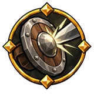 |
Precise Interception | Strength and Dexterity | 12.5% increased parry bonus |
| Recovered Stance | Strength and Dexterity | +10% stagger recovery | |
| Rune of the Counterblow | Strength and Dexterity | +18.75 eitr on parry |
Pets¶
| Name | Branch | Effect | |
|---|---|---|---|
| Faithful Beast's Blood | Intelligence and Strength | 7.5% increased maximum health for pets | |
| Faithful Beast's Fang | Intelligence and Strength | 20% increased damage for pets | |
| Faithful Beast's Hide | Intelligence and Strength | 3.75% reduced damage taken for pets |
Phantom Strikes¶
| Name | Branch | Effect | |
|---|---|---|---|
| Echoing Blows | Dexterity | +10% Phantom strike chance | |
| Fleeting Double | Dexterity | +10% Phantom strike chance | |
| Rending Apparition | Dexterity | +10% Phantom strike chance 30% increased Phantom strike crit chance |
|
| Second Shadow | Dexterity | +10% Phantom strike chance +20% Phantom strike crit damage |
|
| Unseen Executioner | Dexterity | 30% increased Phantom strike crit chance +20% Phantom strike crit damage |
|
| Weightless Hammer | Dexterity | 25% increased Phantom strike stagger build-up |
Pickaxes¶
| Name | Branch | Effect | |
|---|---|---|---|
| Iron Beak | Strength | 20% increased pickaxe damage 5% increased pickaxe attack speed |
|
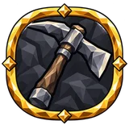 |
Mineface Song | Strength | 12.5% increased pickaxe attack speed on crit recently 30% increased pickaxe critical strike chance |
| Miner at War | Strength | 10% reduced pickaxe stamina cost 40% increased stagger build-up with pickaxes |
|
| Point Beneath the Helm | Strength | 30% increased pickaxe critical strike chance +20% pickaxe critical strike damage |
|
| Skull Cleft | Strength | 20% increased pickaxe damage +20% pickaxe critical strike damage |
|
| Stone Tooth | Strength | 20% increased pickaxe damage 5% increased pickaxe attack speed |
|
| Stubborn Miner | Strength | 10% reduced pickaxe stamina cost | |
| Vein Fissure | Strength | 40% increased stagger build-up with pickaxes |
Piercing Damage¶
| Name | Branch | Effect | |
|---|---|---|---|
| Steel's Tooth | Dexterity | 15% increased piercing damage 40% increased impale build-up |
Poison and Poisoning¶
| Name | Branch | Effect | |
|---|---|---|---|
| Deep Venom | Dexterity and Intelligence | +5% poison damage over time multiplier | |
| Deepening Venom | Dexterity and Intelligence | +5% poison damage over time multiplier | |
| Green Point | Dexterity and Intelligence | +12% poison resistance penetration | |
| Last Venom | Dexterity and Intelligence | 10% increased poison damage over time against low life enemies | |
| Mire's Bite | Dexterity and Intelligence | 20% increased poison build-up 20% increased poison damage over time |
|
| Patient Toxin | Dexterity and Intelligence | +5% poison damage over time multiplier | |
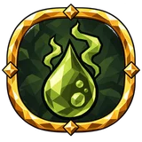 |
Serpent's Admixture | Dexterity and Intelligence | Gain 15% of physical damage as extra poison |
| Slow Withering | Dexterity and Intelligence | 10% increased poison duration | |
| Swamp Dweller's Feast | Dexterity and Intelligence | 20% increased damage against poisoned targets | |
| Thicket's Sting | Dexterity and Intelligence | 15% increased poison damage 20% increased poison build-up 20% increased poison damage over time |
Poisoned Ground¶
| Name | Branch | Effect | |
|---|---|---|---|
| Blighted Soil | Dexterity and Intelligence | 20% increased poison damage with ground effects 30% increased poison damage over time while on Poisoned Ground Spells create ground when they hit terrain with poison damage |
|
| Venomous Reach | Dexterity and Intelligence | 10% increased poison area of effect with ground effects |
Polearms¶
| Name | Branch | Effect | |
|---|---|---|---|
| Draugr's Tooth | Intelligence and Strength | 40% increased polearm damage 40% increased impale build-up with polearms |
|
| Glaive Whirl | Intelligence and Strength | 10% increased polearm area of effect 5% increased polearm attack speed |
|
| Glaive's Thorn | Intelligence and Strength | 10% reduced polearm stamina cost with attacks 10% increased impale damage with polearms |
|
| Halberd Circle | Intelligence and Strength | 5% increased polearm attack speed | |
| Long Steel | Intelligence and Strength | 40% increased polearm damage | |
| Outstretched Blade | Intelligence and Strength | +20% polearm critical strike damage | |
| Passage Warden | Intelligence and Strength | 30% increased polearm critical strike chance +20% polearm critical strike damage |
|
| Ragged Sweep | Intelligence and Strength | 40% increased stagger build-up with polearms | |
| Shaft Dance | Intelligence and Strength | 5% increased polearm attack speed | |
| Shaft Grip | Intelligence and Strength | 10% reduced polearm stamina cost | |
| Watchman's Point | Intelligence and Strength | 30% increased polearm critical strike chance |
Projectiles¶
| Name | Branch | Effect | |
|---|---|---|---|
| Beyond the Far Line | Dexterity | 20% increased ranged damage against distant enemies | |
| Beyond the Horizon | Dexterity and Intelligence | 30% increased projectile critical strike chance against distant enemies | |
| Driving Force | Dexterity | 15% increased projectile damage | |
| Endless Volley | Dexterity | +20% overflowing chance to fire an additional projectile | |
| Eye Above the Plains | Dexterity | 30% increased ranged critical strike chance | |
| Eye Behind the Fletching | Dexterity and Intelligence | 30% increased projectile critical strike chance | |
| Fair wind | Dexterity | 10% increased projectile speed 50% of increased projectile speed is added to projectile damage |
|
| Fateful Flight | Dexterity and Intelligence | +20% projectile critical strike damage | |
| Forking Paths | Dexterity | +20% overflowing chance to chain an additional time +20% overflowing chance to fire an additional projectile |
|
| Frugal Archer | Dexterity | 20% chance to save arrow or bolt on shot | |
| Hawk's Flight | Dexterity | 15% increased projectile damage | |
| Marksman's Hand | Dexterity | 15% increased shooting damage | |
| One More Projectile | Strength and Dexterity | +20% overflowing chance to fire an additional projectile | |
| Path Through Stones | Dexterity and Intelligence | 10% increased projectile speed 15% increased projectile damage +1 bounce |
|
| Sentry's Gaze | Dexterity | 15% increased ranged damage | |
| Skyfall Volley | Strength and Dexterity | 15% increased projectile damage | |
| Splintering Flight | Dexterity | +20% overflowing chance to chain an additional time +20% overflowing chance to fire an additional projectile |
|
| Through Enemy Ranks | Dexterity | 10% increased projectile speed +1 targets pierced by crossbow bolts |
|
| True Flight | Dexterity | 20% increased projectile speed | |
| True Shot | Dexterity | 30% increased shooting critical strike chance | |
| Unbroken Chain | Dexterity | +20% overflowing chance to chain an additional time |
Quivers¶
| Name | Branch | Effect | |
|---|---|---|---|
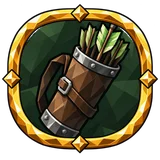 |
Fletcher's Hand | Dexterity | 37.5% increased quiver affix effect on crit recently |
| Tracker's Quiver | Dexterity | 15% increased quiver affix effect |
Rage¶
| Name | Branch | Effect | |
|---|---|---|---|
| Berserker's Wrath | Strength | +5 maximum rage +10% rage effect |
|
| Held Wrath | Strength | −10% rage loss rate +1.25 s rage loss delay |
Reflection¶
| Name | Branch | Effect | |
|---|---|---|---|
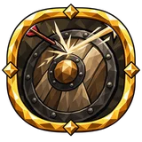 |
Blade's Mirror | Strength | +10% reflect |
resource costs¶
| Name | Branch | Effect | |
|---|---|---|---|
| Movement | Strength and Dexterity | 12.5% reduced cost while moving |
Rings¶
| Name | Branch | Effect | |
|---|---|---|---|
| One More Ring | Intelligence | +1 equipment slots for rings | |
| One More Ring | Intelligence and Strength | +1 equipment slots for rings | |
| One More Ring | Dexterity and Intelligence | +1 equipment slots for rings | |
| One More Ring | Intelligence | +1 equipment slots for rings | |
| Polished Bands | Intelligence | 8% increased ring affix values | |
| Polished Bands | Intelligence and Strength | 8% increased ring affix values | |
| Polished Bands | Dexterity and Intelligence | 8% increased ring affix values | |
| Polished Bands | Intelligence | 8% increased ring affix values |
Rune shield¶
| Name | Branch | Effect | |
|---|---|---|---|
| Caster's Weave | Intelligence and Strength | +20 rune shield 12.5% increased rune shield from equipped body armour |
|
| Circlet Inscription | Dexterity and Intelligence | 12.5% increased rune shield recharge 12.5% increased rune shield from equipped helmet 25% increased rune shield recharge on evade recently |
|
| Closed Circle | Intelligence and Strength | 12.5% increased rune shield −12.5% rune shield recharge delay |
|
| Dvergr's Mantle | Intelligence | +20 rune shield 12.5% increased rune shield from equipped body armour |
|
| Galdr Ward | Intelligence | 12.5% increased rune shield +15 Intelligence |
|
| Keeper's Circle | Intelligence and Strength | +20 rune shield | |
| Renewing Rune | Dexterity and Intelligence | 12.5% increased rune shield recharge −12.5% rune shield recharge delay |
|
| Rune at the Breaking Point | Intelligence and Strength | −12.5% rune shield recharge delay +30% healing effect at low rune shield |
|
| Rune's Thin Edge | Intelligence and Strength | +20 rune shield | |
| Runekeeper's Circlet | Intelligence | 12.5% increased rune shield 12.5% increased rune shield from equipped helmet |
|
| Runic Lining | Intelligence and Strength | +20 rune shield 12.5% increased rune shield recharge on spell cast recently |
|
| Runic Shell | Intelligence | +20 rune shield 12.5% increased rune shield recharge |
|
| Shelter of Signs | Dexterity and Intelligence | 12.5% increased rune shield | |
| Ward Rune | Intelligence and Strength | 12.5% increased rune shield recharge −25% rune shield recharge delay on block recently |
Running¶
| Name | Branch | Effect | |
|---|---|---|---|
| Long breath | Dexterity | 10% increased stamina regeneration 5% reduced running stamina cost |
|
| Measured Pace | Dexterity | 5% reduced running stamina cost |
Scepters¶
| Name | Branch | Effect | |
|---|---|---|---|
| Keeper's Rod | Intelligence and Strength | 20% increased scepter damage 10% reduced scepter stamina and eitr cost |
|
| Lawgiver's Gaze | Intelligence and Strength | 30% increased scepter critical strike chance | |
| Priest's Judgement | Intelligence and Strength | +20% scepter critical strike damage | |
| Rune of Judgement | Intelligence and Strength | 40% increased ailment build-up with scepters | |
| Runekeeper's Grip | Intelligence and Strength | 10% reduced scepter stamina and eitr cost with attacks +20% scepter critical strike damage |
|
| Sceptre in the Dust | Intelligence and Strength | 5% increased scepter attack speed 20% increased scepter damage |
|
| Sceptre's Sweep | Intelligence and Strength | 5% increased scepter attack speed 10% increased scepter area of effect 30% increased scepter critical strike chance |
|
| Seal of Sentence | Intelligence and Strength | +20% scepter critical strike damage | |
| Warden's Hand | Intelligence and Strength | 15% increased scepter attack speed on parry recently |
Shocked Ground¶
| Name | Branch | Effect | |
|---|---|---|---|
| Stormbed | Intelligence | 10% increased lightning area of effect with ground effects 7.5% increased cast speed while on Shocked Ground Spells create ground when they hit terrain with lightning damage |
Skill Cooldown¶
| Name | Branch | Effect | |
|---|---|---|---|
| Norns' Patience | Strength and Dexterity | 25% reduced skill cooldown |
Skill Limits¶
| Name | Branch | Effect | |
|---|---|---|---|
| Capacity of the Sign | Intelligence | +2 limit |
Skill Speed¶
| Name | Branch | Effect | |
|---|---|---|---|
| Nimble Fingers | Dexterity and Intelligence | 5% increased skill speed |
Slams¶
| Name | Branch | Effect | |
|---|---|---|---|
| Breath Before the Fracture | Strength | 5% reduced slam stamina cost | |
| Circle of Broken Earth | Strength | 15% increased slam knockback on stagger with slams recently 10% increased slam area of effect |
|
| Earth Shall Tremble | Strength | 40% increased stagger build-up with slams | |
| Earthquake Stance | Strength | 10% reduced slam stamina cost on block recently | |
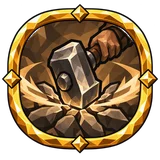 |
Fractured Plains | Strength | 10% increased slam area of effect |
| Giant's Resonance | Strength | 10% increased slam knockback 10% increased slam area of effect |
|
| Jotun's Tread | Strength | 10% increased slam area of effect 10% increased slam knockback |
|
| Old Fighter's Sweep | Strength | 15% increased area of effect on primary attack hit recently | |
| Rumble Underfoot | Strength | 5% reduced slam stamina cost 15% increased slam knockback on stagger recently |
|
| Stone Ripples | Strength | 2.5% increased slam area of effect per 5 points of m of fall height | |
| Valley Hammer | Strength | 10% increased slam area of effect 5% reduced slam stamina cost |
Slashing Damage¶
| Name | Branch | Effect | |
|---|---|---|---|
| Ragged Edge | Strength and Dexterity | 40% increased bleed build-up against moving targets | |
| Slash Damage | Strength and Dexterity | 15% increased slashing damage |
Slipping Guard¶
| Name | Branch | Effect | |
|---|---|---|---|
| Slipping Guard | Dexterity | 7.5% increased evasion rating +10% glancing blow chance on evade recently |
Spears¶
| Name | Branch | Effect | |
|---|---|---|---|
| Boar's Point | Strength and Dexterity | +20% spear critical strike damage 40% increased impale build-up with spears |
|
| Dawn Spear | Strength and Dexterity | 20% increased spear damage 10% increased spear projectile speed |
|
| Hunter's Tooth | Strength and Dexterity | 40% increased ailment build-up with spears | |
| Light Shaft | Strength and Dexterity | 5% increased spear attack speed 10% reduced spear stamina cost |
|
| Spearman's Eye | Strength and Dexterity | 30% increased spear critical strike chance +20% spear critical strike damage |
|
| Tracker's Grip | Strength and Dexterity | 5% increased spear attack speed 10% reduced spear stamina cost |
|
| Wolf's Lunge | Strength and Dexterity | 20% increased spear damage 30% increased spear critical strike chance |
|
| Wound Beneath the Rib | Strength and Dexterity | 10% increased impale damage with spears |
Spells¶
| Name | Branch | Effect | |
|---|---|---|---|
| Broad Inscription | Intelligence | 10% increased spell area of effect | |
| Caster's Reach | Intelligence | 10% increased spell area of effect 5% increased spell cast speed |
|
| Enchanter's Precision | Intelligence | 30% increased elemental staff critical strike chance +20% elemental staff critical strike damage |
|
| Flowing Incantation | Intelligence | 5% increased spell cast speed 5% reduced cast stamina and eitr cost |
|
| Frugal Word | Intelligence | 10% reduced elemental staff stamina and eitr cost | |
| Might of the Sign | Intelligence | 20% increased elemental staff damage | |
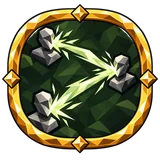 |
Rune's Zigzag | Intelligence | 25% increased spell projectile speed with projectiles on crit recently +1 spell projectile chain with projectiles |
| Runekeeper's Arrow | Intelligence | 10% increased spell projectile speed with projectiles 15% increased spell damage with projectiles |
|
| Seer's Circle | Intelligence | 15% increased area spell damage | |
| Seidr Chant | Intelligence | 15% increased spell damage +15 Intelligence 12.5% increased maximum eitr |
|
| Seidr Confluence | Intelligence and Strength | 30% increased critical strike chance 10% increased area of effect 15% increased spell damage +8 Strength +8 Intelligence |
|
| Swift Word | Intelligence | 7.5% increased spell cast speed at full rune shield | |
| Whisper Above the Runes | Intelligence | 5% increased cast speed |
Spirit Damage¶
| Name | Branch | Effect | |
|---|---|---|---|
| Enchanted Edge | Intelligence | 15% increased spirit damage 15% increased spell damage |
|
| Song of Enchantment | Intelligence | 15% increased spirit damage | |
| Spirit Within Steel | Intelligence | 15% increased spirit damage Gain 15% of physical damage as extra spirit |
Spores¶
| Name | Branch | Effect | |
|---|---|---|---|
| Breath of Spores | Dexterity and Intelligence | 10% increased area of effect for spores | |
| Lasting Bloom | Dexterity and Intelligence | 20% increased ailment and buff duration for spores | |
| Mire Blossom | Dexterity and Intelligence | +2 spore limit | |
| Swamp Garden | Dexterity and Intelligence | +2 spore limit |
Stagger¶
| Name | Branch | Effect | |
|---|---|---|---|
| Bell's Blow | Strength | 80% increased stagger build-up on block recently | |
| Exposed Temple | Strength and Dexterity | 20% increased damage against staggered targets | |
| Fallen Stance | Strength | 20% increased damage against staggered targets | |
| Faltering Ranks | Strength | 40% increased stagger build-up 15% increased knockback on stagger recently |
|
| Ringing Skull | Strength | 40% increased stagger build-up | |
| Troll's Weight | Strength and Dexterity | 40% increased stagger build-up with blunt damage |
Stagger Resistance¶
| Name | Branch | Effect | |
|---|---|---|---|
| Mountain Poise | Strength | +10% stagger resistance | |
| Return to the Ranks | Strength | +10% stagger recovery | |
| Steady Tread | Strength | +12.5% stagger resistance while moving | |
| Stout Neck | Strength | +10% stagger resistance | |
| Wanderer's Footing | Strength | +20% stagger resistance 18.75% increased health regeneration while moving |
Stamina¶
| Name | Branch | Effect | |
|---|---|---|---|
| Deep Reserves | Dexterity | 12.5% increased maximum stamina | |
| Deer's Manoeuvre | Dexterity | 15% increased evasion rating at low stamina | |
| Elk's Heart | Dexterity | 12.5% increased maximum stamina 10% increased stamina regeneration |
|
| Exhilaration | Dexterity | +12.5 stamina on crit | |
| Fresh Wind | Dexterity and Intelligence | 10% increased stamina regeneration | |
| Light Takeoff | Strength and Dexterity | 5% reduced jump stamina cost | |
| Mountain Endurance | Strength and Dexterity | 12.5% increased maximum stamina 10% increased stamina regeneration |
|
| On the Last Breath | Strength | +20% stagger resistance at low stamina | |
| Quiet Breath | Intelligence | 10% increased stamina regeneration | |
| Second wind | Strength and Dexterity | +20 stamina on kill | |
| Steady breath | Intelligence and Strength | 10% increased stamina regeneration | |
| Stone Breath | Strength | 10% increased stamina regeneration | |
| Weary Guard | Strength | +10% glancing blow chance at low stamina |
Staves¶
| Name | Branch | Effect | |
|---|---|---|---|
| Caster's Gesture | Intelligence | 5% increased staff cast speed | |
| Enchanter's Knothole | Intelligence | 20% increased staff damage 10% reduced staff stamina and eitr cost |
|
| Frugal Enchanter | Intelligence | 10% reduced staff eitr cost | |
| Runekeeper's Gaze | Intelligence | 30% increased staff critical strike chance +20% staff critical strike damage |
|
| Runic Imprint | Intelligence | 40% increased ailment build-up with staves | |
| Seer's Grip | Intelligence | 10% reduced staff stamina and eitr cost 10% reduced staff eitr cost |
|
| Staff's Crown | Intelligence | +20% staff critical strike damage | |
| Swift Inscription | Intelligence | 5% increased staff cast speed 30% increased staff critical strike chance |
|
| Wandering Staff | Intelligence | 20% increased staff damage 10% reduced staff stamina and eitr cost |
Stealth¶
| Name | Branch | Effect | |
|---|---|---|---|
| Blade Behind the Shoulder | Dexterity and Intelligence | 30% increased sneak attack damage +25% critical strike damage on an unaware target |
|
| Silent Trail | Dexterity and Intelligence | 10% reduced noise 5% reduced sneaking stamina cost |
|
| Unseen Hunter's Fang | Dexterity and Intelligence | 30% increased sneak attack damage 30% increased critical strike chance on an unaware target |
|
| Wound From the Gloom | Dexterity and Intelligence | 40% increased ailment build-up on an unaware target |
Strikes¶
| Name | Branch | Effect | |
|---|---|---|---|
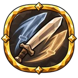 |
Blade's Echo | Intelligence and Strength | 15% increased strike damage +1 additional strikes |
| Many-Handed Fray | Intelligence and Strength | 15% increased strike damage +1 additional strikes |
Swimming¶
| Name | Branch | Effect | |
|---|---|---|---|
| Fray Amid Waves | Dexterity and Intelligence | 5% reduced swimming stamina cost 22.5% increased melee damage while in water |
Swords¶
| Name | Branch | Effect | |
|---|---|---|---|
| Blade's Furrow | Intelligence and Strength | 40% increased ailment build-up with swords | |
| Gap in the Mail | Intelligence and Strength | 30% increased sword critical strike chance | |
| Iron Song | Intelligence and Strength | 20% increased sword damage 15% increased sword attack speed on parry recently +20% sword critical strike damage |
|
| Jagged Wound | Intelligence and Strength | 20% increased sword damage 40% increased bleed build-up with swords |
|
| Jarl's Verdict | Intelligence and Strength | 30% increased sword critical strike chance +20% sword critical strike damage |
|
| Loyalty to the Sword | Intelligence and Strength | 20% increased sword damage 10% reduced sword stamina cost with attacks |
|
| Retainer's Hand | Intelligence and Strength | 5% increased sword attack speed 10% reduced sword stamina cost |
|
| Scarlet Flourish | Intelligence and Strength | 60% increased sword damage on parry recently 10% increased bleed damage with swords |
|
| Steel in a Half Turn | Intelligence and Strength | 5% increased sword attack speed 30% increased sword critical strike chance |
Thorns¶
| Name | Branch | Effect | |
|---|---|---|---|
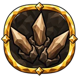 |
Barbed Ward | Strength and Dexterity | 20% increased thorns +15 thorns with the shield up |
| Forged Thorns | Strength | +10 thorns | |
| Iron Briar | Strength | +0.0625 thorns per 20 points of current armour | |
| Thorns on the Cuirass | Strength | +10 thorns +0.0625 thorns per point of armour from your equipped body armour |
|
| Thorny Carapace | Strength | 20% increased thorns |
Throwing Weapons¶
| Name | Branch | Effect | |
|---|---|---|---|
| Handful of Iron | Dexterity and Intelligence | +50% throwing additional projectile chance ×0.75 projectile damage |
|
| Rain of Points | Dexterity and Intelligence | +50% throwing additional projectile chance ×0.75 projectile damage |
|
| Scattered Steel | Dexterity and Intelligence | +1 projectiles per shot or throw ×0.75 projectile damage |
|
| Thrower's hand | Strength and Dexterity | 5% increased throwing attack speed 7.5% reduced throwing stamina cost |
Torches¶
| Name | Branch | Effect | |
|---|---|---|---|
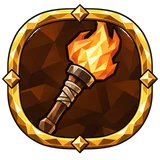 |
Firebrand in the Fist | Strength | 15% increased melee damage |
Tower Shields¶
| Name | Branch | Effect | |
|---|---|---|---|
| Guard's Burden | Strength | 10% reduced tower shield stamina cost when blocking | |
| Oaken Bastion | Strength | 15% increased tower shield block power | |
| Retainer's Wall | Strength | 15% increased tower shield block power | |
| Shield at the Breach | Strength | 15% increased tower shield block power |
Traps¶
| Name | Branch | Effect | |
|---|---|---|---|
| Hunter's Pit | Dexterity and Intelligence | 20% increased trap damage | |
| Steel Snare | Dexterity and Intelligence | 30% increased trap critical strike chance 40% increased stagger build-up with mines and traps |
|
| Trapper's Hand | Dexterity and Intelligence | +20% trap critical strike damage 5% increased trap attack speed |
Two-Handed Weapons¶
| Name | Branch | Effect | |
|---|---|---|---|
| Cleaver's Gaze | Intelligence and Strength | 30% increased two-handed critical strike chance | |
| Drengr's Answer | Strength | 30% increased two-handed damage in melee on block recently | |
| Giant's Grip | Strength | 15% increased two-handed damage 5% increased two-handed attack speed |
|
| Giant's Sweep | Intelligence and Strength | 15% increased two-handed damage in melee 10% increased two-handed area of effect in melee +15 Strength |
|
| Rumble of Heavy Steel | Intelligence and Strength | 15% increased two-handed damage in melee 15% increased area of effect on stagger with two-handed melee weapons recently +15 Strength |
|
| Strike to the Bone | Intelligence and Strength | +20% two-handed critical strike damage | |
| Two Steady Hands | Strength | 10% reduced two-handed stamina cost with attacks +15 Strength |
|
| Two-Hander's Weight | Strength | 40% increased stagger build-up with two-handed weapons |
Weapon Oils¶
| Name | Branch | Effect | |
|---|---|---|---|
| Gleam After the Fray | Strength and Dexterity | 30% increased weapon oil effect on consecutive hits recently | |
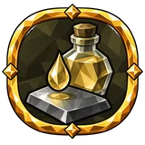 |
Lasting Infusion | Strength and Dexterity | 40% increased weapon oil duration on consecutive hits recently |
| Oil of the First Blow | Strength and Dexterity | 22.5% increased weapon oil effect on primary attack hit recently | |
| Oil of the Last Blow | Strength and Dexterity | 30% increased weapon oil effect on chain finishers | |
| Oil on the Point | Strength and Dexterity | 37.5% increased weapon oil effect on crit recently | |
| Oil's Memory | Strength and Dexterity | 60% increased weapon oil duration on parry recently | |
| Oiled Edge | Strength and Dexterity | 45% increased weapon oil effect on parry recently | |
| Oiled Palm | Strength and Dexterity | +10% oil application speed | |
| Oiled Steel | Strength and Dexterity | 15% increased weapon oil effect | |
| True Infusion | Strength and Dexterity | 15% increased weapon oil effect 20% increased weapon oil duration |
|
| Victor's Gleam | Strength and Dexterity | 60% increased weapon oil effect on kill recently |
Wet¶
| Name | Branch | Effect | |
|---|---|---|---|
| Rain to the Bones | Dexterity and Intelligence | +25% inflicted wet effect | |
| Runes in the Rain | Intelligence and Strength | 30% increased eitr regeneration while wet |
Wet Resistance¶
| Name | Branch | Effect | |
|---|---|---|---|
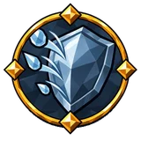 |
Rainwatch Cloak | Intelligence and Strength | +15% wet resistance |
Unimplemented (199)¶
Nodes present in the game files that have no effect yet (placeholders or work in progress)
| Name | Branch | Category | |
|---|---|---|---|
(unnamed) own10028 |
Intelligence | ||
| In development | Intelligence | ||
(unnamed) own10268 |
Intelligence | ||
| In development | Intelligence | ||
(unnamed) own10292 |
Intelligence | ||
(unnamed) own10419 |
Intelligence | ||
| In development | Intelligence | ||
| In development | Intelligence | ||
| In development | Intelligence | ||
| In development | Intelligence | ||
| In development | Intelligence | ||
| In development | Intelligence | ||
| In development | Intelligence | ||
| In development | Intelligence | ||
| In development | Intelligence | ||
(unnamed) own11378 |
Intelligence | ||
| In development | Intelligence | ||
| In development | Intelligence | ||
| In development | Intelligence | ||
| In development | Intelligence | ||
| In development | Intelligence | ||
| In development | Intelligence | ||
| In development | Intelligence | ||
(unnamed) own9697 |
Intelligence | ||
(unnamed) own9703 |
Intelligence | ||
| In development | Intelligence | ||
(unnamed) own9908 |
Intelligence | ||
| In development | Intelligence | ||
| In development | Intelligence | ||
| Reserve | Strength and Dexterity | ||
| Reserve | Strength and Dexterity | ||
(unnamed) own11572 |
Strength and Dexterity | ||
(unnamed) own11608 |
Strength and Dexterity | ||
(unnamed) own11614 |
Strength and Dexterity | ||
| Many-Handed Fray | Strength and Dexterity | ||
(unnamed) own12390 |
Strength and Dexterity | ||
(unnamed) own12525 |
Strength and Dexterity | ||
(unnamed) own12531 |
Strength and Dexterity | ||
| Runekeeper's Feast | Strength and Dexterity | ||
(unnamed) own12731 |
Strength and Dexterity | ||
(unnamed) own12755 |
Strength and Dexterity | ||
(unnamed) own12779 |
Strength and Dexterity | ||
| Reserve | Strength and Dexterity | ||
| Reserve | Strength and Dexterity | ||
| Reserve | Strength and Dexterity | ||
| Long Trail | Strength and Dexterity | ||
(unnamed) own12995 |
Strength and Dexterity | ||
(unnamed) own13365 |
Strength and Dexterity | ||
(unnamed) own13368 |
Strength and Dexterity | ||
| In development | Strength and Dexterity | ||
| In development | Strength and Dexterity | ||
| In development | Strength and Dexterity | ||
| In development | Strength and Dexterity | ||
| In development | Strength and Dexterity | ||
| In development | Strength and Dexterity | ||
| In development | Strength and Dexterity | ||
| In development | Strength and Dexterity | ||
| In development | Strength and Dexterity | ||
(unnamed) own11490 |
Intelligence and Strength | ||
(unnamed) own11493 |
Intelligence and Strength | ||
(unnamed) own11843 |
Intelligence and Strength | ||
| Seer's Grip | Intelligence and Strength | ||
(unnamed) own11984 |
Intelligence and Strength | ||
(unnamed) own12014 |
Intelligence and Strength | ||
(unnamed) own12020 |
Intelligence and Strength | ||
(unnamed) own12026 |
Intelligence and Strength | ||
(unnamed) own12389 |
Intelligence and Strength | ||
| In development | Intelligence and Strength | ||
| In development | Intelligence and Strength | ||
| In development | Intelligence and Strength | ||
| In development | Intelligence and Strength | ||
| Trail of Retribution | Intelligence and Strength | ||
(unnamed) own13367 |
Intelligence and Strength | ||
| In development | Intelligence and Strength | ||
(unnamed) own11489 |
Dexterity and Intelligence | ||
(unnamed) own11492 |
Dexterity and Intelligence | ||
| In development | Dexterity and Intelligence | ||
| In development | Dexterity and Intelligence | ||
| Road Through Heather | Dexterity and Intelligence | ||
(unnamed) own11845 |
Dexterity and Intelligence | ||
| In development | Dexterity and Intelligence | ||
| In development | Dexterity and Intelligence | ||
| Second Wind | Dexterity and Intelligence | ||
(unnamed) own11983 |
Dexterity and Intelligence | ||
(unnamed) own12010 |
Dexterity and Intelligence | ||
(unnamed) own12013 |
Dexterity and Intelligence | ||
(unnamed) own12016 |
Dexterity and Intelligence | ||
(unnamed) own12019 |
Dexterity and Intelligence | ||
(unnamed) own12022 |
Dexterity and Intelligence | ||
(unnamed) own12025 |
Dexterity and Intelligence | ||
| In development | Dexterity and Intelligence | ||
| In development | Dexterity and Intelligence | ||
| In development | Dexterity and Intelligence | ||
| In development | Dexterity and Intelligence | ||
(unnamed) own12217 |
Dexterity and Intelligence | ||
(unnamed) own12223 |
Dexterity and Intelligence | ||
| In development | Dexterity and Intelligence | ||
| In development | Dexterity and Intelligence | ||
| In development | Dexterity and Intelligence | ||
(unnamed) own12472 |
Dexterity and Intelligence | ||
| In development | Dexterity and Intelligence | ||
| In development | Dexterity and Intelligence | ||
| In development | Dexterity and Intelligence | ||
| In development | Dexterity and Intelligence | ||
| In development | Dexterity and Intelligence | ||
| In development | Dexterity and Intelligence | ||
| In development | Dexterity and Intelligence | ||
| In development | Dexterity and Intelligence | ||
| In development | Dexterity and Intelligence | ||
| In development | Dexterity and Intelligence | ||
| In development | Dexterity and Intelligence | ||
| In development | Dexterity and Intelligence | ||
| In development | Dexterity and Intelligence | ||
| In development | Dexterity and Intelligence | ||
| In development | Dexterity and Intelligence | ||
| In development | Dexterity and Intelligence | ||
| In development | Dexterity and Intelligence | ||
| In development | Dexterity and Intelligence | ||
| In development | Dexterity and Intelligence | ||
| In development | Dexterity and Intelligence | ||
| In development | Dexterity and Intelligence | ||
| In development | Dexterity and Intelligence | ||
| In development | Dexterity and Intelligence | ||
| In development | Dexterity and Intelligence | ||
| In development | Dexterity and Intelligence | ||
| In development | Dexterity and Intelligence | ||
(unnamed) own13366 |
Dexterity and Intelligence | ||
(unnamed) own13369 |
Dexterity and Intelligence | ||
| In development | Dexterity and Intelligence | ||
| In development | Dexterity and Intelligence | ||
| In development | Dexterity and Intelligence | ||
| In development | Dexterity and Intelligence | ||
| In development | Dexterity and Intelligence | ||
| In development | Dexterity and Intelligence | ||
| In development | Dexterity and Intelligence | ||
| In development | Dexterity and Intelligence | ||
| In development | Dexterity and Intelligence | ||
| In development | Dexterity and Intelligence | ||
| In development | Dexterity and Intelligence | ||
| In development | Dexterity and Intelligence | ||
| In development | Dexterity and Intelligence | ||
| In development | Dexterity and Intelligence | ||
(unnamed) own10263 |
Strength | ||
(unnamed) own10266 |
Strength | ||
(unnamed) own10287 |
Strength | ||
(unnamed) own10290 |
Strength | ||
(unnamed) own10522 |
Strength | ||
(unnamed) own10534 |
Strength | ||
(unnamed) own10546 |
Strength | ||
| Reserve | Strength | ||
| In development | Strength | ||
| In development | Strength | ||
| In development | Strength | ||
| In development | Strength | ||
| In development | Strength | ||
(unnamed) own9699 |
Strength | ||
(unnamed) own9936 |
Strength | ||
(unnamed) own10024 |
Dexterity | ||
(unnamed) own10027 |
Dexterity | ||
| In development | Dexterity | ||
| In development | Dexterity | ||
| Elk's Heart | Dexterity | ||
| Tracker's Roll | Dexterity | ||
(unnamed) own10481 |
Dexterity | ||
(unnamed) own10487 |
Dexterity | ||
| Light Tread | Dexterity | ||
| In development | Dexterity | ||
| Step After the Fall | Dexterity | ||
| In development | Dexterity | ||
| In development | Dexterity | ||
| In development | Dexterity | ||
(unnamed) own10595 |
Dexterity | ||
(unnamed) own10616 |
Dexterity | ||
(unnamed) own10733 |
Dexterity | ||
(unnamed) own10745 |
Dexterity | ||
(unnamed) own10763 |
Dexterity | ||
| In development | Dexterity | ||
| In development | Dexterity | ||
| In development | Dexterity | ||
| In development | Dexterity | ||
| In development | Dexterity | ||
(unnamed) own11246 |
Dexterity | ||
| In development | Dexterity | ||
| In development | Dexterity | ||
| In development | Dexterity | ||
| In development | Dexterity | ||
| In development | Dexterity | ||
| In development | Dexterity | ||
| In development | Dexterity | ||
| In development | Dexterity | ||
| In development | Dexterity | ||
| In development | Dexterity | ||
| In development | Dexterity | ||
(unnamed) own9695 |
Dexterity | ||
(unnamed) own9784 |
Dexterity | ||
(unnamed) own9934 |
Dexterity | ||
| In development | Dexterity | ||
| In development | Dexterity | ||
| In development | Dexterity |
Data from Path of Valheiman 5.3.6, extracted 2026-10-27.